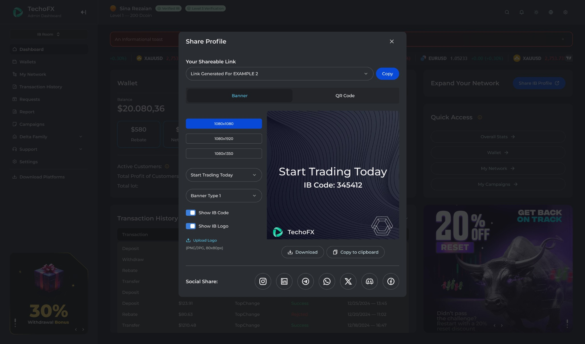
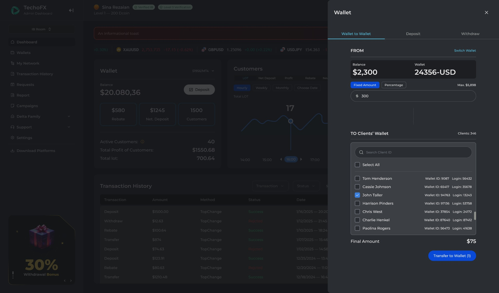

FinTech / Product Work
IB & Referral Platform
Partner networks, multi-level IB structures, commissions and performance analytics.

IB dashboard: partner networks, wallet access and customer analytics.
Product Overview
An introducing-broker platform for managing partner relationships, referral networks, commission workflows and customer activity. It connects the partner experience with brokerage operations.
Business Problem
Multi-level partner networks create complex relationships between IBs, sub-IBs, clients and earnings. Partners and brokerage teams need a clear view of these relationships and the activity behind them.
Target Users
Introducing brokers, sub-IB partners and brokerage partnership, finance and operations teams.
My Role & Ownership
I lead strategy, roadmaps and prioritization for the IB and referral product as part of my TopFast responsibilities. I coordinate Product Owners, designers and engineering teams around partner workflows and brokerage requirements.
Product Discovery & Strategy
Product planning connects the partner journey with multi-level networks, flexible commission models and performance visibility. My focus is aligning priorities and cross-functional work around this shared product direction.
Key Product Decisions & Capabilities
Tree-based IB and sub-IB networks sit alongside commission and payout workflows, client activity, deposits, trading performance and partner history. Partners can inspect insights, share a profile with visibility controls and use wallet-transfer workflows.
Delivery & Cross-functional Collaboration
I work across Product Owners, product designers and engineering squads to coordinate roadmap priorities and delivery. Network structure, commission visibility and operational actions are treated as connected parts of the partner experience.
Outcomes & Product Value
The platform gives partners and brokerage teams a common view of referral relationships, earnings and performance. This supports partner management and makes the operational context behind commissions easier to follow.
Product Screens
Explore the interfaces and workflows below.
View full image ↗ View full image ↗
View full image ↗

View full image ↗

View full image ↗